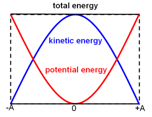

Harmonic Motion: A Web-Dev Perspective
Powered by: 
Introduction
Web development is an essential component in day-to-day scientific computing encompassed in many programming languages ranging from Javascript to even PHP. Many research studies rely on these tools, however, how do programmers replicate these experiments with mark-up languages like HTML , stylizing in CSS, and the programming behind Javascript? This research study is intended to answer the question, “How well does a simulated harmonic motion of a mass-spring system align with the behavior of a real-world mass-spring system? Is one reliable over the other?” To think of answering this question, we will observe exactly how "perfect" this simulation can be, and if it eliminates or adds any sources of error realistic to its real-world counterpart.


Abstract
This study examines the validity of scientific computing when replicating real-world physics scenarios. In particular, the research observes a harmonic simulation built with Javascript and HTML,
stylized in CSS, and compares the results of scenarios within the simulation to a study by Warawut Sukmak, who examined the real-time graphing of a mass-spring system given initial variables.
The objective of this study is to create an Harmonic Motion simulator with real-time recording of each oscillation interval, and to test whether or not real-world experiments can be replicated and
essentially replace the physical mass-spring system itself.
This experiment was run under Mozilla Firefox’s Developer browser as it is well known for its optimization in web development. Additionally, the program was run under a Ryzen 5 3600 that operates at 3.6 GHz, which is important to note since rerunning this simulation with the exact variables may vary differently on other browsers and computer components.
Keywords: Harmonic motion Simulation, Mass-Spring system, Replicate, Validity of Scientific Computing
What is Harmonic Motion in a Mass-Spring System?
Harmonic motion refers to an periodic motion in which it oscillates back and forth around an equilibrium position from the cause of a restoring force. The harmonic motion that is examined in this study will be from a mass-spring system. Mass-spring systems operate when a mass is displaced from its equilibrium (at rest) to then cause its spring to exert a force proportional to the displacement in the opposite direction. This is an attempt to restore the mass to its original position, however, it simply makes the mass oscillate, converting potential energy to kinetic energy back and forth.
Mass (kg)
Spring const (k)
Amplitude
Equation of Harmonic Motion for the Simulator
1. Examine the force law for harmonic motion: F = -kx
2. Algebraically manipulate with Newton's law, F = ma : ma = -kx
3. Solve for acceleration: a = (-k/m)x
4. Equation of Motion -> a becomes the position of the mass, x": x" = (-k/m)x
Additional Equations
5. Solve for velocity, Vf: Vi + ΔT * a
6. Verify Time Results, T in seconds: T = 2π√(m/k)
7. Solve (4) with Euler's Method: xnew= xcurrent + ΔT * (vcurrent + ΔT * a)
8. Calculate Average Time: ΣT/n
9. Angular Frequency: ω = (2π)/T
10. Harmonic Motion Graph Equation: x(t) = Acos(ωt)
Simulation Notes
When the simulation begins, the first recorded oscillation will always be slightly lower than the next. This is merely because the mass starts 0.01 below it's actual equilibrium position to allow the functionality of the "most-recent run timer" along with how the timer resets everytime it finishes an oscillation. In addition, the simulation imitates a frictionless mass-spring system with no damping. Thus, the results of this simulation should be compared to a real-world system with the same parameters. Each run should mathematically be checked by the timer equation (6) to verify the correctiveness.
Method
To observe the research question, the method that will be used is a simulation of the Harmonic Oscillator embedded into this website. To dive deeper, we can first explain how the simulation is built for mathematical accuracy.
Given that we know the equation of motion (equation 4), the simulation uses the functions in the Method's Source Code section to solve it using Euler's method in the form:
xnew= xcurrent + ΔT * (vcurrent + ΔT * a)
The data that will be replicated with this method is a real-world experiment conducted by Warawut Sukmak, who examined the real-time graphing of a mass-spring system given initial variables and time results:
| Experiment | Mass (kg) | Spring Constant (N/m) | Time (s) |
|---|---|---|---|
| Exp1 | 0.187 | 13.563 | 0.78417 |
| Exp2 | 0.421 | 13.563 | 1.14999 |
| Exp3 | 0.421 | 23.975 | 0.86320 |
NOTE: The time it takes for the mass-spring system to complete one oscillation is recorded.
In addition, Warawut included graphs for his experiment, and the goal of mine is to replicate that data, showing how valid this method of scientific computing is. After performing the experiments indicated in the table, the time it takes to complete each oscillation with these given variables will be recorded. To ensure accuracy and precision, the mass-spring in the simulation must oscillate 10 times for the trial to be completed. Lastly, the average time will be calculated to compare the results of the simulation to the real-world experiment to truly answer, how well does it align to their counterparts?
Method ~ Source Code
1. Calculate the acceleration (change of velocity) for the curernt position.
/*NOTE: deltaT varies amongst different browsers and machines. DeltaT is the given value below because my computer needs this to create a realistic timer.*/
var deltaT = 0.003475; // time increment in seconds
var acceleration = calculateAcceleration(state.position);
// Returns acceleration (change of velocity) for the given position
function calculateAcceleration(x) {
/* We are using the equation of motion for the harmonic oscillator:
a = -(k/m) * x
Where a is acceleration, x is displacement, k is spring constant and m is mass.*/
return -(state.springConstant / state.mass) * x;
}
2. Next, use the current acceleration to predict the new velocity.
//Next, use the current acceleration to predict the new velocity
// Calculates the new velocity: current velocity plus the change.
function newVelocity(acceleration) {
return state.velocity + deltaT * acceleration;
}
State.velocity = newVelocity(acceleration);
3. Lastly, calculate the new position via: xnew= xcurrent + ΔT * (vcurrent + ΔT * a)
/*As acceleration and velocity is updated, every frame of the simulator runs these functions to calculate a new position*/
function newPosition() {
//current position + the change
return state.position + deltaT * state.velocity;
}
Results
| Trial | Exp1 | Exp2 | Exp3 |
|---|---|---|---|
| 1 | 0.7 | 1.07 | 0.79 |
| 2 | 0.73 | 1.1 | 0.83 |
| 3 | 0.73 | 1.1 | 0.83 |
| 4 | 0.73 | 1.1 | 0.83 |
| 5 | 0.73 | 1.1 | 0.82 |
| 6 | 0.73 | 1.1 | 0.83 |
| 7 | 0.73 | 1.1 | 0.83 |
| 8 | 0.74 | 1.1 | 0.83 |
| 9 | 0.73 | 1.1 | 0.82 |
| 10 | 0.73 | 1.1 | 0.82 |
| MEAN | 0.728 | 1.097 | 0.823 |
NOTE: The time it takes for the mass-spring system to complete one oscillation is recorded for each trial.
These results can be compared to the Warawut experiment to see how close they are to his. In addition, the time that was supposed to be measured for each experiment is calculated via, Equation 6. By comparing the results of Warawuts, and the simulation, to the predicted time from Equation 6 will show how accurate the simulation is compared to the real world system.
Performing the Method
Video not playing? Open it in a new tab or turn offs "enhanced tracking protection."
After the method was performed, Time vs Displacement graphs were created using equations, 8,9, & 10 based on the Results panel. Given the time of the ten trials, calculate angular frequency, to then form an cosine equation of the experiment(s) using equation 10, where A (amplitude) is 1.
Time(x) vs Displacement(y) Graphs
x(t) = cos(8.630749048t)
x(t) = cos(5.72760739t)
x(t) = cos(7.634490045t)
Comparison to Intended Results & Real Mass-Spring System
Experiment 1: After comparing the results of the simulation to Warawut's experiment, there is a 0.05617 difference between the results.
Though there is a gap between these results, it can be observed that the simulation is very close to the inteneded mathematical solution, calculated from Equation 6. Using equation 6 with the
intial varibales of experiment, we get: T = 2π√(0.187/13.563) = 0.7377730565, meaning there is a 0.0097730565 difference with the simulation and a 0.0463969435
difference with Warawut's system.
Experiment 2: Like Experiment 1, a pattern of observation is predictable in Experiment 2. There is a 0.05299 difference between Warawut's system and the simulation. However, equation 6
mathematically intends the results must be T = 2π√(0.421/13.563) = 1.106988312, meaning there is a 0.0099883118 difference with the simulation and a 0.043001688 difference with Warawut's system.
Experiment 3: Lastly, by using the same predictable pattern, there is a 0.0402 difference between
Warawut's system and the simulation. However, equation 6 proves,
T = 2π√(0.421/23.975) = 0.8326099726 , meaning there is a 0.0096099726 difference with the simulation and a 0.0305900274 difference with Warawut's system.
Conclusion
By examining the "Comparison to Intended Results & Real Mass-Spring System" panel, it can be concluded that the simulation is very close to the intended mathematical solution, however, marginally inaccurate to the circumstances of a real-world mass-spring system. The simulation perfectly replicates a mass-spring system in a case where there is no source of errors besides the computer's processing power. However, it does not exactly align the behavioral errors of a real-world mass-spring system.
The real-world mass system's results can have sources of errors present due to simply, its method of measuring the time. Theoretically, it is too fast for a human to measure the time of which oscillations are completed, thus creating a source of error. The simulation, however, predicts the oscillation's movement perfectly by constantly memorizing where the location of a mass is at a given time. This is why the simulation is more accurate than the real-world system, and does not align to the behaviors of a real-world mass-spring system correctly.
To answer the question, "How well does a simulated harmonic motion of a mass-spring system align with the behavior of a real-world mass-spring system?" it can be concluded that the simulation can perfectly replicate a mass-spring system in a real-world setting within a frictionless environment, where no damping is present; however, it does not replicate the potential errors of a real-world sytem. Therefore, it can be said that the simulation is more reliable than the physical experiment, but not as accurate as the physical experiment in terms of realism in obtaining errors.
Sources & References
1. Harmonic motion. Harmonic motion. (n.d.). http://labman.phys.utk.edu/phys135core/modules/m9/harmonic_motion.html
2. Khan Academy. (n.d.). Introduction to simple harmonic motion review (article). Khan Academy. https://www.khanacademy.org/science/oscillations-and-waves-essentials/x9db3ed27fc69f96d:how-are-tall-buildings-protected-from-earthquakes/x9db3ed27fc69f96d:mathematics-of-simple-harmonic-motion/a/introduction-to-simple-harmonic-motion-review
3. Programming a harmonic oscillator in HTML & javascript. Wooooow! (2016, April 15). https://evgenii.com/blog/programming-harmonic-oscillator/
4. M, D. (2015, September 25). Simple harmonic motion graphs IB physics. YouTube. https://www.youtube.com/watch?v=C1rp6TUVEbQ
5. Sukmak, W. (2022, January). Real-Time Graphing of Simple Harmonic Motion of Mass on Springs with an Arduino Based on an Experiment Set for Teaching and Learning Physics. The Turkish Online Journal of Educational Technology. https://files.eric.ed.gov/fulltext/EJ1338131.pdf